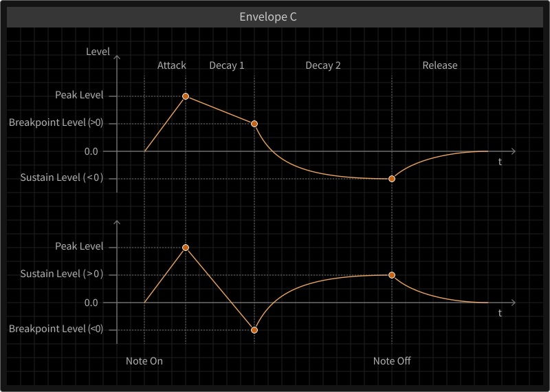
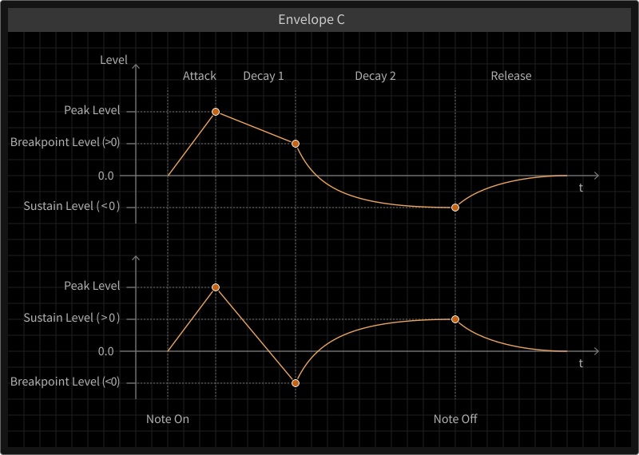

Envelopes
 

The primary purpose of the envelopes is to create modulation signals according to played keys. Their most crucial applications are certainly the amplitudes (peak levels) of the oscillators, which is predefined. So the amplitude of Oscillator A directly depends on the signal of Envelope A, as the amplitude of Oscillator B directly depends on the signal of Envelope B. Besides, there are other targets which can be influenced by the envelopes according to modulation amount parameters. They are referred to in the following sections.
In total, there are four envelope signals to be taken use of. Three of them are flexibly definable, as provided by three parameter groups called Envelope A, B and C. Whereas Envelopes A and B are applyable in the two branches (Oscillators and Shapers), Envelope C can be used more globally for the modulations of pitches, cutoff frequencies, resonances or feedback levels. In addition, a non-parametric Gate signal is produced and applied for feedback control and the decay of the Comb Filter.
The Gate signal is a very simple envelope that jumps to 100% intensity when a key is pressed. When this key is released, the signal drops back to zero within a few milliseconds.
The signals of the other three envelopes are way more advanced. Lots of parameters define the behavior of each envelope, including variable sensitivities to the velocities and pitches of played notes.
For a particular envelope (A, B or C), there are four consecutive segments defining the signal progression. When a key is pressed, the signal starts by rising from (usually) zero to the peak level within the Attack time. The peak level can depend on the key-down velocity, whereas the time can range between zero and 16 seconds and also can depend on the key-down velocity (shortening it for higher velocities). The Attack curve is linear by default but can be tweaked to get a concave or convex shape. With a concave shape it starts with a smaller slope and gets steeper, with a convex shape it is the opposite. The time and curve of the Attack segment determine the perceived sharpness of the beginning tone.
When the signal has reached the peak level, a new transition to the Breakpoint level (between zero and the peak level) will begin. This segment will be active within the given Decay 1 time (also between zero and 16 seconds). It will impact the early evolution of the produced tone. The first two segments determine the start transients, which are important for the perceived character of a sound.
When the signal has reached the Breakpoint level, the Decay 2 segment will become effective. Within a given time, the segment will exponentially approach the Sustain level (between zero and the peak level as well). The Sustain level defines how much the perceived tone will persist at a stationary level while holding the corresponding key. High Sustain levels are typical for pad and organ sounds, for example. If the Sustain level is low or zero, a percussive tone character will emerge, with the Decay 2 time controlling if it sounds shorter or longer. The Sustain level will hold as long as the key remains pressed.
The final segment, called the Release phase will become effective as soon as the corresponding key is released. Within a given time the signal approaches zero exponentially. Regardless of the perceived loudness of the tone up to now, it will disappear by fading out. Similar to the Attack segment, the Release time can be sensitive to the key-up velocity.
As explained, the key velocities can influence the perceived loudness of the tone as well as the speed of its start and demise. In addition, the Key Tracking parameters determine how much the key position influences both the levels and times of the envelope segments.
In conclusion, an Envelope group can model quite a lot of different tonal processes with varying degrees of realism. It can produce spiky impulses as well as long, complicated and seemingly artificial contours. All parameters, but especially the timing are highly precise and their sensitivities to the performing user can be carefully defined as well.
Finally, three more aspects are quite worth mentioning. Whereas the times of the first two segments (Attack, Decay 1) are well defined by (finite) transitions, the remaining two segments (Decay 2, Release) approach their destinations exponentially. This means, the signal takes an asymptotical path towards a specific value, but actually never reaches it. In order to define the speed of this infinite process by a particular time, the definition is as following: When the signal drops from 100% towards zero (as described for the Gate signal), after the given time the signal will be at approximately 37% still. This relationship may sound arbitrary or random, but actually reflects countless natural processes (like the behavior of a plucked string).
Secondly and up to now, all three Envelope groups (A, B, C) have been described at once. A major difference of Envelope C as a global modulation source is, that its Breakpoint and Sustain levels are bipolar. This renders Envelope C more versatile and can make tonal evolutions even more complex.
At last, another note on the Release segment in the context of the modulation mechanism. All segment times are represented as modulation target parameters, so they can be influenced by the Macro Controls. And whereas the times of the first three segments can be precisely tuned between zero and 16 seconds, the Release Time (target) parameter can be further set to infinite, allowing the Release segment to „freeze“. This allows for the integration of a „Sustain Pedal“, modulating the Release time up to infinity while holding it.
Examples for Envelopes

Envelope Amounts
The oscillator and shaper groups feature several envelope amount parameters. They can be understood as an additional multiplier for the corresponding main parameter value. This multiplier blends between a constant signal of one and the corresponding envelope signal, as the following pictures illustrate.

As a result, the corresponding main parameter can be blended by the amount parameter between its pure value and a fully modulated version (by the corresponding envelope). On the other hand, for pitch-related parameters (Oscillators, Comb Filter, State Variable Filter) and the State Variable Filter resonance, the associated envelope amount parameters simply weight the corresponding envelope signals, before being added to the main parameter value.